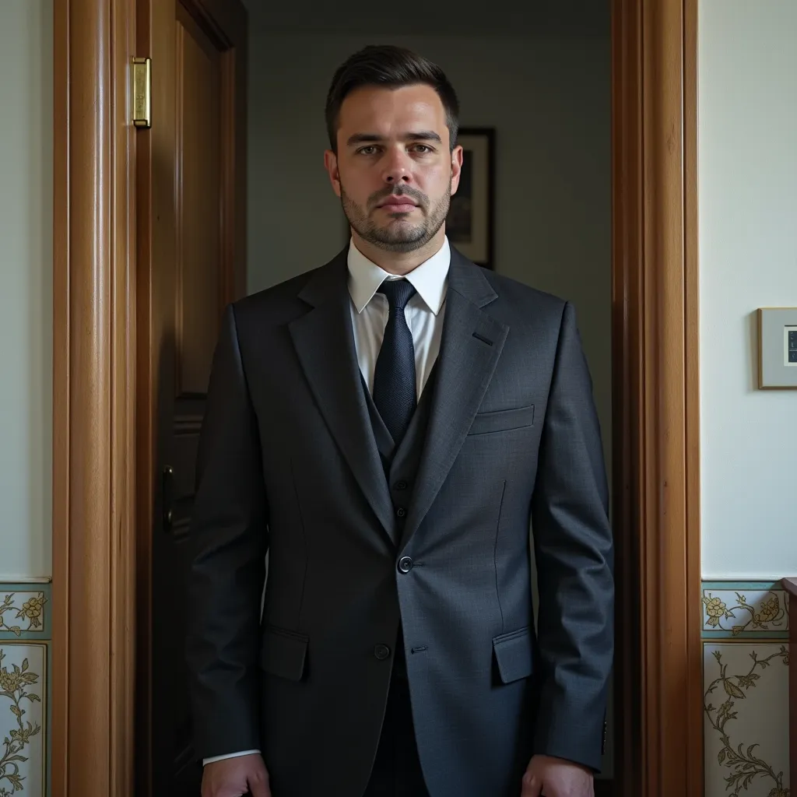

Después de disparar a la rata de cloaca, que no paraba de pedirme clemencia, de recordarme que tenía familia e hijos; solo me queda un destino posible, la dirección que encontré en mi diario, así que me dispongo a ir para allá.
